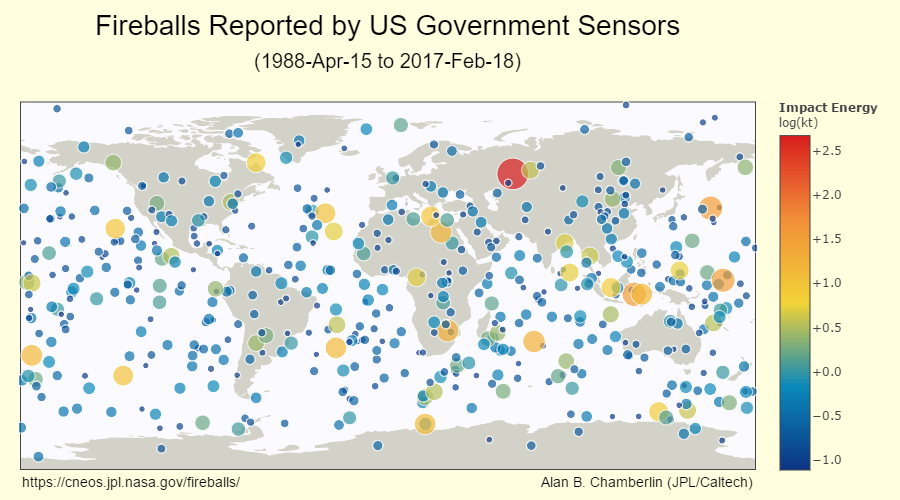

The Sentry API
Above you can see reported fireball events, with each event's calculated total impact energy indicated by its relative size and by a color. These collision events are what the Sentry system is in place to monitor and to predict. Many people fear an event like the estimated 6.2 mile (10 km) wide comet or asteroid that caused mass extinction on the Earth approximately 66 million years ago. The CAD API can let us know if any comets or asteroids will be in the neighborhood. Let's see how we can use the Sentry API to see if anything is expected to be visiting Earth!
The first thing we want to do is prepare our GET request. The URL we will be using is:
https://api.nasa.gov/SSD-CNEOS/Sentry?api_key=[#]
If you go to the NASA Sentry API site, you will find there are 4 types of queries/modes:
Mode S-A summary table for available Sentry objects (the default if no parameters are entered):
https://api.nasa.gov/SSD-CNEOS/Sentry?api_key=[#]
Mode O-Object specific details (99942 is the des for 99942 Apophis):
https://api.nasa.gov/SSD-CNEOS/Sentry?api_key=[#]&des=433
Mode V-The VI (virtual impactor) for available Sentry objects with IP >= 1e-3 (IP is the sum of the impact probabilities from all detected potential impacts):
https://api.nasa.gov/SSD-CNEOS/Sentry?api_key=[#]&all=1&ip-min=1e-3
Mode R-Objects removed from Sentry (these were once considered a threat but then were removed):
https://api.nasa.gov/SSD-CNEOS/Sentry?api_key=[#]&removed=1
Just as with the NASA CAD API, there isn't a lot of information on the NASA Sentry API site. But happily, there is a link to the JPL CNEOS Sentry API website. This is where one can find a listing and description of the parameters, as well as a data output section with sample output. As before, the data output section is key, as it lets us know the output will be in JSON-format and it deciphers the data fields for each of the four modes.
There are 689 objects currently in the Sentry database (as of 2/24/2017,) and objects are added and removed as appropriate. Referring to the Data
Output section of the JPL CNEOS Sentry API site, the data we are looking for (the less technical, more user friendly data) is found in the Mode S query.
The parameters I have chosen are:
- h-max: none (default-Absolute Magnitude which is a measure of intrinsic brightness)
- ps-min: none (default- Palermo Technical Impact Hazard Scale: <-2 no likely consequences, between -2 and 0 merit careful monitoring, >2 merit concern)
- ip-min: IP >= 1e-3 (Impact Probability that is relatively high)
- days: none (default- no restriction/observed anytime)
https://api.nasa.gov/SSD-CNEOS/Sentry?api_key='+ apiKey +'&ip-min=1e-3Below is the JavaScript code used for the call to the API:
The code is similar to that for the call to the CAD API. The differences are the URL and, although the code for the results table in the callback function (lines 10-32) is structured the same, how the cells are filled is a bit different. We'll discuss that shortly.
var apiKey = 'my API key';
var req = new XMLHttpRequest();
req.open('GET', 'https://api.nasa.gov/SSD-CNEOS/Sentry?api_key='+ apiKey +'&ip-min=1e-3', true);
req.addEventListener('load',function(){
if(req.status >= 200 && req.status < 400){
var response = JSON.parse(req.responseText);
console.log(response);
console.log(req.responseText);
function buildTable(response) {
var table = document.createElement("table");
var fields = Object.keys(response.data[0]);
var headRow = document.createElement("tr");
fields.forEach(function(field) {
var headCell = document.createElement("th");
headCell.textContent = field;
headRow.appendChild(headCell);
});
table.appendChild(headRow);
response.data.forEach(function(object) {
var row = document.createElement("tr");
fields.forEach(function(field) {
var cell = document.createElement("td");
cell.textContent = object[field];
row.appendChild(cell);
});
table.appendChild(row);
});
return table;
}
document.body.appendChild(buildTable(response));
}
else {
document.write("Error in network request: " + req.statusText);
}});
req.send(null);
Below you can see the JSON data received from our GET request req.responseText:
And here the data has been parsed to a JavaScript object request.
If you refer back to the code to create the table,
you can see that the <th> cells were filled using the Object.keys function to return the fields array containing the property names that the response.data[0] object had.
The <td> cells were filled with the values of the properties of the objects in the response.data array (hence cell.textContent = object[field];).
Object count:"10" data:Array[10] 0:Object des: "2000 SG344" diameter: "0.037" fullname: "(2000 SG344)" h: "24.79" id: "bK00SY4G" ip: "0.002207389" last_obs: "2000-Oct-03.60723" last_obs_jd: "2451821.10723" n_imp: "104" ps_cum: "-2.93" ps_max: "-3.26" range: "2069-2113" ts_max: "0" v_inf: "1.35671958037301" __proto__:Object 1:Object 2:Object 3:Object 4:Object 5:Object 6:Object 7:Object 8:Object 9:Object length:10 __proto__:Array[0] signature:Object __proto__:Object
And here is the table created from the results:
There are 10 objects out there that have a cumulative impact probability (ip) greater than .001. None of our 17 near-Earth asteroids made the list. Of these 10 asteroids, only 1, 410777 (2009 FD), is >-2 on the Palermo Scale (ps_cum) meaning it merits careful monitoring. If we look at the diameters, 410777 (2009 FD) is the largest at 0.16 km, hardly extinction size. But look: the year range is 2185-2198, so we have nothing to worry about! In fact, looking at those dates, most of those are gonna miss me (that is, I will miss them) by several years. The list isn't static 'though. It is a good thing we can use the NASA Sentry API to check back on any newcomers to the list!
You have reached the end of this How-To Guide on NASA's EPIC, CAD, and Sentry APIs. I hope you found it informative. You can always check out the other APIs available from NASA here. Thank you!